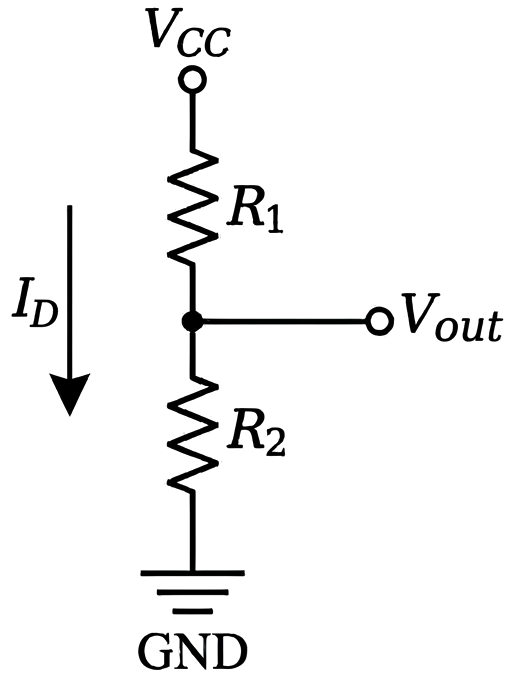
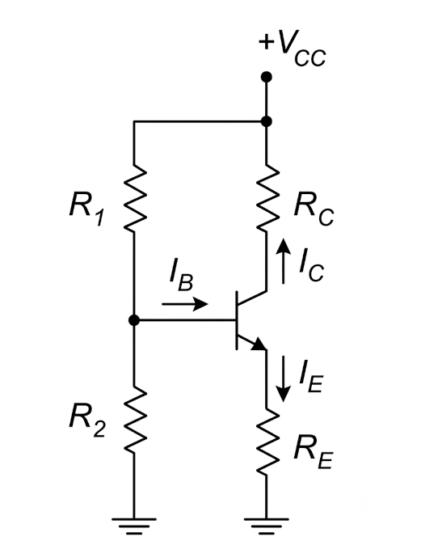
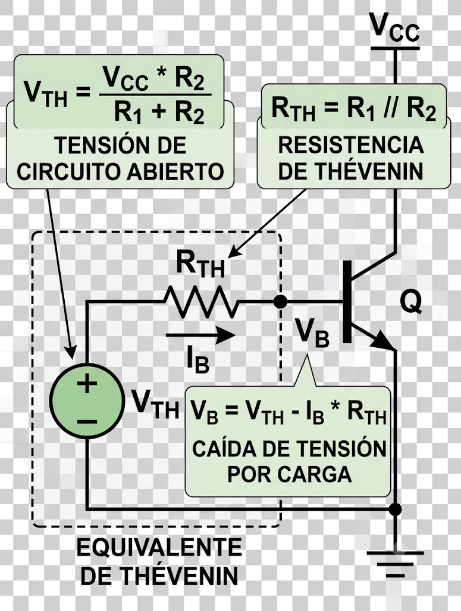
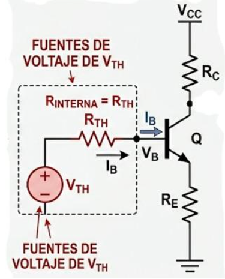

EL EFECTO DE CARGA EN LOS TRANSISTORES
Cómo la corriente de base modifica el comportamiento ideal de un divisor de voltaje
1. INTRODUCCIÓN
En un circuito de polarización por divisor de voltaje, la base del transistor no constituye una carga idealmente abierta, ya que absorbe una corriente de base $I_B$. Como consecuencia, el divisor formado por $R_1$ y $R_2$ se ve afectado por la presencia del transistor, fenómeno conocido como efecto de carga.
El divisor de voltaje formado por las resistencias $R_1$ y $R_2$ ayuda a establecer el punto de operación de corriente continua.

En un divisor de voltaje, sin transistor conectado, el divisor está solo. El voltaje de base ideal es:
$V_{BB}=V_{CC}\frac{R_2}{R_1+R_2} $
La corriente del divisor es:
$I_{D}=\frac{V_{CC}}{R_1+R_2} $
Y nadie le extrae corriente al nodo. En estas condiciones, toda la corriente del divisor circula únicamente por $R_1$ y $R_2$ .

La base absorbe una corriente $I_B$, aparece una corriente de base
Entonces el divisor ya no está solo.
Parte de la corriente que antes circulaba únicamente por $R_2$, ahora se desvía hacia la base, por lo que el divisor deja de comportarse como un circuito aislado.
La consecuencia es que, en el divisor de tensión:
- La corriente de base $I_B$ extrae corriente del divisor.
- El voltaje de base disminuye respecto del valor ideal.
- Cambia la distribución de corriente en el divisor de tensión.
- Cambia la caída de tensión
- El voltaje suministrado por el divisor disminuye respecto del valor ideal.
Por ello se dice que la base del transistor carga el divisor de voltaje. El nombre proviene de que la base del transistor actúa como una carga conectada al divisor de voltaje.
2. EL EFECTO DE CARGA
Se denomina efecto de carga al fenómeno por el cual un circuito que originalmente suministraba un determinado voltaje o corriente modifica su comportamiento al conectarse a otro circuito que extrae corriente de él.
En este contexto, la palabra carga no se refiere a carga eléctrica almacenada, sino al concepto de load, es decir, un elemento o circuito consumidor.
En términos más generales, existe efecto de carga cuando un circuito conectado a la salida de otro absorbe corriente y modifica el voltaje o la corriente que el circuito original produciría sin esa conexión. Por eso también se habla de cargar una fuente, cargar un sensor, cargar un divisor.
El transistor no genera el efecto de carga por sí mismo; simplemente actúa como carga del divisor al demandar corriente de base.
3. RESISTENCIA DE THEVENIN Y EFECTO DE CARGA EN EL DIVISOR
Hasta aquí hemos visto que la base del transistor absorbe una corriente $I_B$, lo que altera el comportamiento ideal del divisor de voltaje.
Para analizar cuantitativamente esta modificación conviene reemplazar el divisor $R_1$ - $R_2$ por su equivalente de Thevenin.
El divisor de voltaje puede representarse mediante:
- Una fuente equivalente de tensión:
$V_{BB}=V_{TH} = V_{CC}\frac{R_2}{R_1+R_2}$
- Y una resistencia equivalente en serie denominada resistencia de Thevenin:
$R_{TH}=R_1 \parallel R_2$, donde:$R_1 \parallel R_2 = \frac{R_1 R_2}{R_1 + R_2}$

Entonces el divisor puede modelarse por:
- Una fuente ideal $V_{BB}=V_{TH}$
- Una resistencia interna $R_{TH}$.
Debido a esta resistencia interna, la tensión entregada por el divisor no permanece ideal cuando la base absorbe corriente.
La base "ve" esa fuente a través de $R_{TH}$. La expresión “la base "ve" esa fuente a través de $R_{TH}$ es una forma abreviada de referirse a la fuente presentada a la entrada de la base del transistor. No implica que la base “vea” algo; se trata de una interpretación desde el nodo de base.
La resistencia de Thevenin no constituye un nuevo componente físico del circuito. Representa la resistencia interna equivalente del divisor de voltaje observada desde el nodo de base hacia el propio divisor.

Cuando la base del transistor se conecta al divisor, aparece la corriente $I_B$. Esta corriente circula a través de $R_{TH}$ , produciendo una caída de tensión:
$\mathbf{V_{R_{TH}}} = {I_B}R_{TH}$ .
Esta caída de tensión sobre la resistencia interna del divisor, también es llamada caída de tensión por efecto de carga, ya que solo aparece cuando la base carga el divisor.
Como consecuencia, el voltaje real que llega a la base del transistor ya no coincide exactamente con el valor ideal $V_{TH}$ o también mencionado como $V_{BB}$, sino que resulta:
$\mathbf{V_B} = V_{TH} - I_B R_{TH}$
Esta ecuación muestra con claridad el origen del efecto de carga: la corriente de base produce una caída de tensión sobre la resistencia interna del divisor .
En otras palabras, el divisor de voltaje no actúa como una fuente ideal de tensión, sino como una fuente real con resistencia interna RTH. Cuanto mayor sea dicha resistencia, más sensible será el divisor a la corriente absorbida por la base.
Sin embargo, si la caída ${I_B}R_{TH}$ es despreciable (divisor rígido), entonces $V_B = V_{TH}$. En ese caso, el efecto de carga es tan pequeño que puede ignorarse, y el divisor se comporta prácticamente como una fuente ideal de tensión.
4. RIGIDEZ DEL DIVISOR DE VOLTAJE Y CRITERIOS PARA DESPRECIAR EL EFECTO DE CARGA. DIVISOR DE VOLTAJE RÍGIDO
En un circuito de polarización mediante divisor de voltaje, el divisor formado por por R1 y R2se diseña para establecer una tensión de base aproximadamente constante. Sin embargo, al conectarse la base del transistor, aparece una corriente de base IB. que extrae corriente del divisor y modifica su comportamiento ideal.
El grado en que el transistor altera la tensión suministrada por el divisor se denomina efecto de carga.
Se dice que un divisor de voltaje es rígido —también llamado divisor constante o stiff voltage divider en la literatura anglosajona— cuando la corriente absorbida por la base produce una variación despreciable del voltaje de polarización.
En un divisor rígido:
En el análisis de polarización por divisor usando Thévenin se obtiene:
Interpretación física
Observa que $R_{TH}$, aparece dividido entre $(\beta+1)$.
Como normalmente: $β≫1$, el término ${\frac{R_{TH}}{\beta_{DC}+1}}$, suele ser pequeño comparado con $R_E$.
Por eso, la corriente de emisor depende principalmente de $R_E$ y muy poco de $\beta$.
Por ejemplo, si:
- $R_{TH+}= {2K\Omega}$
- $\beta_{DC}=100$
Si $R_E=1K\Omega$, la resistencia efectiva es: $ {1000\Omega + 19.8\Omega} \approx {1020 \Omega}$
Por eso la corriente de emisor depende principalmente de $R_E$ y muy poco de $\beta$.
Relación con la "inmunidad al $\beta$"
Esta ecuación demuestra precisamente por qué la polarización por divisor de tensión es relativamente insensible a las variaciones de $\beta$:
- Si $\beta$ aumenta,$\mathbf{\frac{R_{TH}}{\beta_{DC}+1}}$ disminuye.
- Si $\beta$ disminuye,$\mathbf{\frac{R_{TH}}{\beta_{DC}+1}}$, aumenta.
- Pero ese término suele ser mucho menor que $R_E$, por lo que $I_E$ cambia poco.
En el caso ideal de un divisor completamente rígido: $\frac{R_{TH}}{\beta_{DC}+1}$ ,
y la ecuación se aproxima a: $\mathbf{{{I_E}}\approx{\frac{V_{TH}-V_{BE}}{R_E}}}$, que ya no contiene $\beta$.
Esa es la demostración matemática de que la corriente la fija esencialmente $R_E$ cuando el divisor es suficientemente rígido.
Para obtener una corriente de polarización $I_E$ que sea insensible a las variaciones de temperatura y del factor $\beta$ del transistor, deben cumplirse las siguientes condiciones:
y entonces: $V_{TH} \approx V_B$;
es decir, solo bajo esa condición el voltaje del divisor coincide con el voltaje real de base
5. ¿CUANDO PUEDE IGNORARSE EL EFECTO DE CARGA?
El efecto de carga puede despreciarse cuando la corriente de base provoca una caída pequeña sobre la resistencia equivalente del divisor, $R_{TH}$.
En tales condiciones: $\mathbf{V_{R_{TH}} = I_B R_{TH}\approx 0}$
Por lo que el voltaje aplicado a la base prácticamente coincide con el voltaje de Thévenin: $V_B \approx V_{TH}$
Como consecuencia, el divisor de tensión se comporta como una fuente de voltaje prácticamente constante o divisor rígido.
Esta aproximación permite utilizar el análisis aproximado de polarización, también conocido como método del divisor rígido o aproximación de divisor constante, en el cual se asume que el voltaje de base permanece prácticamente invariable.
En la práctica, esta condición se cumple cuando la corriente que circula por el divisor es mucho mayor que la corriente de base, de modo que la carga ejercida por el transistor resulta despreciable. Si esta condición no se cumple, el efecto de carga debe incluirse en el análisis mediante el circuito equivalente de Thévenin.
6. ¿CUÁNDO NO DEBE IGNORARSE EL EFECTO DE CARGA?
El efecto de carga no puede despreciarse cuando la corriente de base modifica apreciablemente el voltaje suministrado por el divisor.
En estas circunstancias: $\mathbf{V_B < V_{BB}}$ y el análisis ideal deja de ser válido.
7. RESISTENCIA EQUIVALENTE PRESENTADA POR EL EMISOR
Cuando el transistor opera en la región activa, la corriente de emisor es:
La expresión “$R_E$ visto desde la base” es una forma abreviada de referirse a la resistencia equivalente presentada entre la base y tierra por el transistor y el resistor de emisor; se trata de una interpretación desde un par de terminales.
Para comprender el resultado, recordemos que: $V_E=I_ER_E$
Sustituyendo $I_E \approx \beta_{DC} I_B$, tenemos: $\boldsymbol{V_E=(\beta_{DC} I_B)R_E}$
Sin embargo, desde la base la corriente disponible es únicamente $I_B$. Por definición de resistencia: $R=\frac{V}{I}$
Por tanto, la resistencia equivalente presentada entre la base y tierra es:
$\boldsymbol{R_{ENTRADA(base)}=\frac{V_E}{I_B}}$
Sustituyendo: $\boldsymbol{R_{ENTRADA(base)}=\frac{(\beta_{DC} I_B)R_E}{I_B}}$
Ejemplo:
Si:
- $R_E = 1k\Omega$ y
- $\beta_{DC}=100$
Y la base entrega: $I_B=10\mu A$,
Entonces, reemplazando $\beta_{DC}$ e $I_B$ en: $\boldsymbol{I_E \approx \beta_{DC} I_B}$
y la caída en $R_E$ es: $V_E=(1 mA)(1 kΩ)=1V$
Desde la base: $R_{ENTRADA(base)}=\frac{1V}{10\mu A}=100KΩ$
O lo que es lo mismo
$\boldsymbol{R_{ENTRADA(base)}=\beta_{DC}R_E = (100)(1k\Omega) = 100K\Omega}$
Aunque físicamente solo exista un resistor de 1 kΩ, el circuito presenta desde la base una resistencia equivalente cercana a 100 kΩ.
8. CRITERIOS PARA DETERMINAR SI UN DIVISOR ES RÍGIDO
La bibliografía técnica emplea dos criterios principales —y un tercero derivado— para decidir si un divisor de voltaje puede considerarse rígido.1. CRITERIO BASADO EN $R_{TH}$ Y $R_{{ENTRADA}(base)}$
Es el criterio físicamente más general.
Y se compara con la resistencia equivalente presentada por el transistor: $\boldsymbol{R_{ENTRADA(base)}}$
Es un diseño muy rígido, muy estable, pero consume más corriente en el divisor.
Algunos diseños aceptan: $\boldsymbol{R_{TH}≤0.1R_{ENTRADA(base)}}$ conocida como regla 10:1 o divisor casi constante.
En este caso el efecto de carga no desaparece, pero permanece moderado.
La regla 100:1 mide la relación entre la resistencia interna total del divisor y la carga aplicada por la base. Es más general y más exacto
2. CRITERIO BASADO EN $R_2$ Y $R_{ENTRADA(base)}$
Muchos textos introductorios utilizan un criterio simplificado.
Dado que la carga del transistor aparece conectada en paralelo con $R_2$, puede estimarse la influencia del transistor comparando $R_{ENTRADA(base)}$ con $R_2$.
Esta resistencia equivalente ($R_{ENT(base)} \approx \beta_{DC}R_E$) presentada por la base aparece en paralelo con el resistor R2 del divisor de voltaje y constituye la carga efectiva aplicada al divisor.
Por ello, el efecto de carga puede estimarse comparando $R_{ENTRADA(base)}$ con $R_2$.
- Si: $\beta_{DC}R_E$ ≥ 10R_2$ el efecto de carga es pequeño (del orden del 10% o menor), y el divisor de voltaje puede considerarse rígido o prácticamente independiente de las variaciones del transistor.
- En cambio, si $\beta_{DC}R_E < 10R_2$, el efecto de carga ya no puede despreciarse. En tal caso, debe calcularse la resistencia equivalente: $R_2 \parallel \beta_{DC}R_E$ ya que la corriente de base modifica apreciablemente el voltaje suministrado por el divisor.
En consecuencia, mientras mayor sea la relación entre $R_{ENTRADA(base)}$ y $R_2$, menor será la influencia del transistor sobre la tensión de polarización de base y más estable será el punto de operación del circuito.
La lógica es sencilla, si $R_{ENTRADA(base)}$ es mucho mayor que $R_2$, el paralelo: $R_2 \parallel R_{ENTRADA(base)}$ queda muy próximo a $R_2$ y el divisor casi no cambia.
Este método es sencillo y útil como estimación rápida, mide directamente: cuánto altera la base al resistor inferior del divisor. Es un criterio local y muy intuitivo.
Sin embargo, constituye una aproximación, ya que no considera explícitamente la resistencia total del divisor sino únicamente la rama inferior.
3. CRITERIO BASADO EN LAS CORRIENTES DEL DIVISOR
Algunas referencias expresan la rigidez del divisor comparando la corriente del divisor con la corriente de base.
La corriente que atraviesa $R_2$ es: $\boldsymbol{I_{R_2} = \frac {V_B}{R_2}}$
Usualmente se adopta: $\boldsymbol{I_{R_2} ≥ 10I_B}$
Este criterio es equivalente al anterior, ya que ambos expresan la misma idea física: la corriente absorbida por la base debe ser pequeña comparada con la corriente propia del divisor.
SÍNTESIS OPERATIVA
En la práctica:| Situación | Tratamiento |
|---|---|
| $\boldsymbol{R_{TH} << R_{ENT(base)}}$ | Divisor rígido; puede ignorarse el efecto de carga |
| $\boldsymbol{R_{ENT(base)} ≥ 10R_2}$ | Estimación rápida de divisor rígido |
| $\boldsymbol{I_R{_2}≥10I_B}$ | Verificación mediante corrientes |
| Resistencias comparables | El efecto de carga debe incluirse mediante &R_{TH}$ |